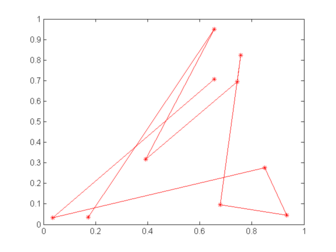

Contents
I. 清空环境变量及命令
clear all
clc
II. MATLAB编程习惯与风格 两个%%+空格可以进入cell mode 模式 publish使用
x_coordinate = rand(1,10);
y_coordinate = rand(1,10);
figure
plot(x_coordinate,y_coordinate,'r-*')
 III. MATLAB程序调试 学会看错误信息并分析出错原因
%% % 1. Index must be a positive integer or logical. A = [1 2 3 4 5]; A(0) A(3.5) A(-2)
%% % 2. Undefined function or variable 'B'. B
%% % 3. Inner matrix dimensions must agree. B = [1 2 3]; A * B
%% % 4. Function definitions are not permitted at the prompt or in scripts. function c = add(a,b) c = a + b;
%% % 5. Index out of bounds because numel(A)=5. A(6)
%% % 6. In an assignment A(I) = B, the number of elements in B and I must be the same. A(3) = B;
%% % 7. Expression or statement is incorrect--possibly unbalanced (, {, or [. mean(A(1:3)
%% % 8. Too many input arguments. mean(A,1,2)
9. 循环体的调试 断点调试
a = 1:100; b = []; for i =1:21 %原来i是i=1:21 想找到循环的错误爆发点 怎么调试技巧 ii=21:21 index = 105 - 5*i; b = [b a(index)]; end
Subscript indices must either be real positive integers or logicals.
Error in Example_2 (line 55)
b = [b a(index)];
10. 查看、编辑MATLAB自带的工具箱函数 varargin varargout nargin nargout
edit mean edit newff
III. MATLAB内存优化配置
feature memstats %
IV. 向量化编程
1. 及时清除不用的变量
a = rand(10000);
b = rand(10000);
clear a
b = rand(10000);
2. 使用变量前，预分配内存空间
clear all clc n = 30000; tic; for k = 1:n a(k) = 1; end time = toc; disp(['未预分配内存下动态赋值长为',num2str(n),'的数组时间是:',num2str(time),'秒！']) tic b = zeros(1,n); for k = 1:n b(k) = 1; end time = toc; disp(['预分配内存下动态赋值长为',num2str(n),'的数组时间是:',num2str(time),'秒！']) %%c % 3. 选择恰当的数据类型 clear all clc n = 300000; a = 8; b{1} = 8; c.data = 8; tic for k = 1:n; a; end time = toc; disp(['访问',num2str(n),'次double型数组时间是:',num2str(time),'秒！']) tic for k = 1:n; b{1}; end time = toc; disp(['访问',num2str(n),'次cell型数组时间是:',num2str(time),'秒！']) tic for k = 1:n; c.data; end time = toc; disp(['访问',num2str(n),'次struct型数组时间是:',num2str(time),'秒！'])
4. 按列优先循环
clear all clc n = 1000; a = rand(n); tic for i = 1:n for j = 1:n a(i,j); end end toc for i = 1:n for j = 1:n a(j,i); end end toc
5. 循环次数多的变量安排在内层
clear all clc tic a = 0; for i = 1:1000 for j = 50000 a = a + 1; end end toc tic a = 0; for i = 1:50000 for j = 1:1000 a = a + 1; end end toc
6. 给一些函数“瘦身”
edit mean clear all clc a = rand(1,10000); tic b = mean(a) toc tic c = sum(a)/length(a) toc
V. 图像对象和句柄
1. 如何设置线条的属性呢？
x = 0:0.01:2*pi; y = sin(x); h = plot(x,y); grid on get(h) set(h,'linestyle','-','linewidth',2,'color','k')
2. 如何修改网格的间隔呢？ gca获得当前坐标体系的句柄
set(gca,'xtick',0:0.5:7) set(gca,'ytick',-1:0.1:1)
3. 如何设置图例的字体及大小呢？
x = 0:0.01:2*pi; y1 = sin(x); y2 = cos(x); plot(x,y1,'r') hold on plot(x,y2,'-.b') h = legend('sin(x)','cos(x)'); set(h,'fontsize',16,'color','k','edgecolor','r','textcolor','w')
4. 如何拆分图例呢？
x = 0:0.01:2*pi; y1 = sin(x); y2 = cos(x); h1 = plot(x,y1,'r'); hold on h2 = plot(x,y2,'-.b'); ax1 = axes('position',get(gca,'position'),'visible','off'); legend(ax1,h1,'sin(x)','location','northwest') ax2 = axes('position',get(gca,'position'),'visible','off'); legend(ax2,h2,'cos(x)','location','northeast')